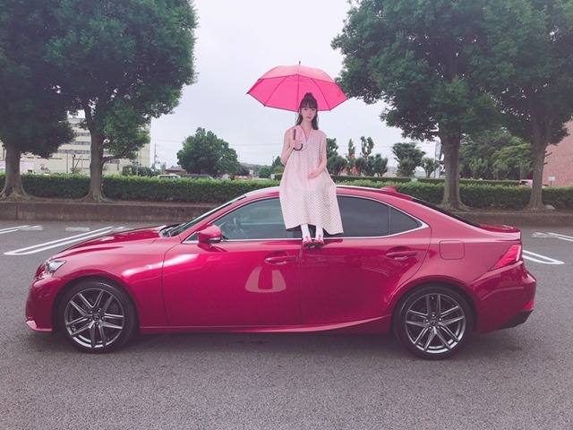
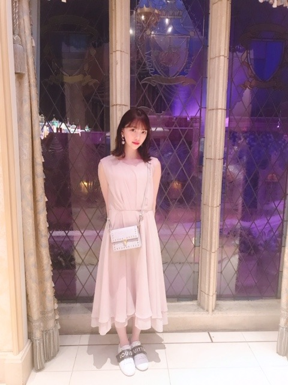

2019/0813Tue窓の景色は
路面電車の街
のMVが公開されました！
https://youtu.be/vUTmAHhAaEY
監督は山岸聖大さん！おひさしぶりでした！
ほっぺむぎゅ。
22歳で、学生役。ドキドキ
無邪気に走り回ってたりケラケラ笑っていて、自分でも自分を見て、おぉ楽しんでるなって。笑
あと車の上にも乗っちゃってます☺︎


映像がとても綺麗で、何回も何回も見てほしいな。
おすすめシーンは帰りの駅のホームでヒカリちゃんとパッと見つめ合うシーンです。
一瞬だけど、憧れや切なさや温もりやもどかしさ色んな気持ちが詰まっていてお気に入りシーンになりました
あとね、山岸監督がホットギミック を観てくださったみたいで合間にホットギミック のお話しができて凄く嬉しかったです✨嬉しいなぁ
感想聞かせてください☺︎


明日は京セラドーム2daysです！
久しぶりのライブがんばります〜
メンバーに会うのも皆さんに会うのも楽しみ
では☺︎
2019/08/13 18:30
コメント(340)
未央奈さん尊敬してる。いつも忙しいのにメールくれてありがとうございます。誕生日きたら23歳だね。学生役まだまだ大丈夫ですよ。もっと若く見えるから。反町隆史さんとGTOとかやって見たら？大阪行けないけど今日の未央奈さんのテレビ番組は見るつもりです。忙しいのにブログ更新速いから時間の使い方が上手い❗。
未央奈ちゃんおはようございます‼ありがとうございます！頑張ります‼頑張って下さい！今日もありがとうございます！頑張ります‼今日も頑張ります‼
乃木坂のライブの時にまた台風だな(^^;)
未央奈、あすか、やますた、矢はいじ、ばぶばぶ、メンバーの方々、スタッフさん(特に美人で可愛いスタッフさん。笑)熱中症に用心して頑張れー
ほりぴー映画観に行きたいグォォォヽ(｀Д´#)ﾉ。笑
未央奈、あすか、やますた、矢はいじ、ばぶばぶ、メンバーの方々、スタッフさん(特に美人で可愛いスタッフさん。笑)熱中症に用心して頑張れー
ほりぴー映画観に行きたいグォォォヽ(｀Д´#)ﾉ。笑
MV凄く映像が綺麗でついつい何回も見てしまいます！！
今日からのライブ頑張ってください！
では、、
goodluck
今日からのライブ頑張ってください！
では、、
goodluck
みおなー忙しいのにブログ更新ありがとう！
オーストラリアから応援してるよ。日本は暑いと思うから体調に気をつけてライブ頑張ってね！
オーストラリアから応援してるよ。日本は暑いと思うから体調に気をつけてライブ頑張ってね！
ブログ更新ありがとう~（ ; ; ）
路面電車の街みました~！もうめっちゃ見返してて、友達にもたくさん見せちゃいました！笑
あのmvとても好きです！見ていて吸い込まれるような感じがして未央奈ちゃんとても綺麗でした。
制服似合いすぎる！もし高校に未央奈ちゃんみたいな先輩がいたらファンになってる絶対！笑
最後の二枚は本当にお姫様！お姫様すぎる♡
どんな服も着こなせちゃう未央奈ちゃんは本当に憧れです☺︎
ライブ頑張ってね☺︎台風が心配
応援してます
路面電車の街みました~！もうめっちゃ見返してて、友達にもたくさん見せちゃいました！笑
あのmvとても好きです！見ていて吸い込まれるような感じがして未央奈ちゃんとても綺麗でした。
制服似合いすぎる！もし高校に未央奈ちゃんみたいな先輩がいたらファンになってる絶対！笑
最後の二枚は本当にお姫様！お姫様すぎる♡
どんな服も着こなせちゃう未央奈ちゃんは本当に憧れです☺︎
ライブ頑張ってね☺︎台風が心配
応援してます
未央奈、おはよう。
MVですが、何回観ても受けてしまう所があります。
車乗れないので、どいてあげて下さいw
今日も暑いです 水分いっぱいとって体をいたわってあげて下さいね！
MVですが、何回観ても受けてしまう所があります。
車乗れないので、どいてあげて下さいw
今日も暑いです 水分いっぱいとって体をいたわってあげて下さいね！
堀ちゃん、明日横浜から大阪ドーム
行けるかな？
行っても帰れるかな〜？
行けるかな？
行っても帰れるかな〜？
MV最高でした！
未央奈さん大好きです！
未央奈さん大好きです！
未央奈京セラ楽しみだよ！！いくよ。可愛いねMVチェックするよ。
未央奈さんいつも忙しいのにまめにメールくれてありがとうございます。西日本に台風が来るからライブいく人交通機関に気をつけて下さい。学生役まだまだ大丈夫ですよ。もっと若く見えるから。では
未央奈ブログ更新ありがと！
MVめっちゃ良かった！
MVめっちゃ良かった！
相変わらず可愛いね
ブログの更新最近多くて嬉しいよ〜
ブログの更新最近多くて嬉しいよ〜
MVでの未央奈ちゃん車の上に乗るなんてセレブ感満載っぽく感じる！
好きー！
ライブがんばって！
ライブがんばって！
mvでのハーフアップかわいかったよ
路面電車の街ライブで聴きたいな
路面電車の街ライブで聴きたいな
未央奈 おはよう！
MV 何回もリピートして見てるよ！
ノスタルジックな気分になり、
聴き心地の良い曲と、
なんだか懐かしく優しい映像。
窓を開けて、風を感じて、口笛を吹きたくなる歌。
本当に心地の良い余韻。
京セラライブ二日間、楽しんで！いっぱいいっぱい笑って！
台風に負けるな！
未央奈は未央奈のままで、
最高の笑顔を！
MV 何回もリピートして見てるよ！
ノスタルジックな気分になり、
聴き心地の良い曲と、
なんだか懐かしく優しい映像。
窓を開けて、風を感じて、口笛を吹きたくなる歌。
本当に心地の良い余韻。
京セラライブ二日間、楽しんで！いっぱいいっぱい笑って！
台風に負けるな！
未央奈は未央奈のままで、
最高の笑顔を！
更新本当にありがとう☆〃MV観たよ(’-’*)♪未央奈本当に楽しそう(*^^*)車の上に乗ってたねΣ(ﾟﾛﾟ;)おじさん、困ってたのも笑っちゃった(^^;でも最後泣きそうになったし最高のMV☆今日から大阪公演‼頑張って‼オレは仕事で行けないけど応援してる‼未央奈大好き(*･∀･*)
ブログ更新ありがとう！mvすごく良かった〜 ❤︎ 綺麗な映像と世界観が好き！
堀ちゃん、大好きだよー
むぎゅかわいい
ほっぺむぎゅ
かわいい
MV見ました。
感動してうるうるしました。
飛鳥とのシーンから釘付けで、先の展開も気になり、関係性を理解し始めた段階からまた新たな視点で楽しめて
歌、歌詞とともに！
また次に見たときには感じるものも変化するのかと思うと楽しみです。これはホットギミックも同じかもしれませんね。
京セラドームがんばってね☺︎
応援しとるよー！
ほっぺむぎゅ
かわいい
MV見ました。
感動してうるうるしました。
飛鳥とのシーンから釘付けで、先の展開も気になり、関係性を理解し始めた段階からまた新たな視点で楽しめて
歌、歌詞とともに！
また次に見たときには感じるものも変化するのかと思うと楽しみです。これはホットギミックも同じかもしれませんね。
京セラドームがんばってね☺︎
応援しとるよー！
可愛い過ぎ。
MV観ました！良かった！
MV観ました！良かった！
みおちゃんこんにちは。
路面電車の街めっちゃ良いです╰(*´︶`*)╯♡
何回も聴いてる〜！
路面電車の街めっちゃ良いです╰(*´︶`*)╯♡
何回も聴いてる〜！
みおなちゃん、こんにちは。
路面電車の街のMV、僕は見たよ。とてもすばらしいMVですね。みおなちゃん、めっちゃかわいかったよ。路面電車の街、めっちゃいい曲ですね。
２４ｔｈシングル、僕は全タイプ絶対買うね。発売日がめっちゃ楽しみです。
真夏の全国ツアー、大阪公演2日間、僕はどちらも行けませんが、応援しています。みおなちゃん、楽しんでね。
みおなちゃん、体調に気をつけて仕事頑張ってね。
またコメントするね。
路面電車の街のMV、僕は見たよ。とてもすばらしいMVですね。みおなちゃん、めっちゃかわいかったよ。路面電車の街、めっちゃいい曲ですね。
２４ｔｈシングル、僕は全タイプ絶対買うね。発売日がめっちゃ楽しみです。
真夏の全国ツアー、大阪公演2日間、僕はどちらも行けませんが、応援しています。みおなちゃん、楽しんでね。
みおなちゃん、体調に気をつけて仕事頑張ってね。
またコメントするね。
見ましたー(*´ω｀*)車に座ってましたねーお嬢様設定なんかな(*´ω｀*)
大阪頑張ってね( ˙꒳˙ᐢ )
大阪頑張ってね( ˙꒳˙ᐢ )
やほ～♡
ほっぺたむぎゅ～かわゆすなぁ～✨
学生役は本当に似合ってますよー！！
車の上に乗るシーンは前衛的ですね♪
ヒカリちゃんもとっても雰囲気があるし、
メンバー3人の組み合わせも新鮮ですね♡
ヒカリちゃんと見つめ合うシーンも素敵で、
全体の映像がとっても美しくて幻想的です☆
大阪ライブも夏祭りみたいに楽しみです～☺
ほっぺたむぎゅ～かわゆすなぁ～✨
学生役は本当に似合ってますよー！！
車の上に乗るシーンは前衛的ですね♪
ヒカリちゃんもとっても雰囲気があるし、
メンバー3人の組み合わせも新鮮ですね♡
ヒカリちゃんと見つめ合うシーンも素敵で、
全体の映像がとっても美しくて幻想的です☆
大阪ライブも夏祭りみたいに楽しみです～☺
MVのご紹介ありがとうございました！
一つ一つの撮影に未央奈ちゃんの熱い気持ちを感じました！
大阪ライブ残念ながら明日が中止との事で本日の公演頑張って下さい！
一つ一つの撮影に未央奈ちゃんの熱い気持ちを感じました！
大阪ライブ残念ながら明日が中止との事で本日の公演頑張って下さい！
未央奈～～更新ありがとう。
未央奈の名前の他にひまわりがあったんだ！これは新事実！そういえば未央奈の名前の由来って何？前言っていたなら僕も確認するけどふと思った。
路面電車の街MV見たよ曲聞いた時はいい曲だと思ったよ久しぶりに少々昔の事とか故郷の事とか思い出したよ MVは色々と考えることとかあったね！最初は寂しい感じかと思ったけど最後は微笑ましいというかこっちもこっちで何かしら考えることがあったよ。駅の所も良いところだよね。後電車の未央奈と二人の所の笑顔とか良かったね４人の時も仲良し感が合ったりしてちょっとうるっときゃった。
MVは色々と考えることとかあったね！最初は寂しい感じかと思ったけど最後は微笑ましいというかこっちもこっちで何かしら考えることがあったよ。駅の所も良いところだよね。後電車の未央奈と二人の所の笑顔とか良かったね４人の時も仲良し感が合ったりしてちょっとうるっときゃった。
京セラドームは明日は残念だったね。でも今日の分のライブはあるわけだし今日のライブ楽しんで遠くから応援しているね後は神宮球場のがあるだけか早いね僕もこれからもうひと頑張りしますかな？
では、次は秋、体調に気おつけて頑張ってね！
未央奈の名前の他にひまわりがあったんだ！これは新事実！そういえば未央奈の名前の由来って何？前言っていたなら僕も確認するけどふと思った。
路面電車の街MV見たよ曲聞いた時はいい曲だと思ったよ久しぶりに少々昔の事とか故郷の事とか思い出したよ
京セラドームは明日は残念だったね。でも今日の分のライブはあるわけだし今日のライブ楽しんで遠くから応援しているね後は神宮球場のがあるだけか早いね僕もこれからもうひと頑張りしますかな？
では、次は秋、体調に気おつけて頑張ってね！
明日のライブなくなっちゃった〜
みおなに会いたかったのに
みおなに会いたかったのに
未央奈ちゃんこんばんは‼ありがとうございます！楽しみにしてます！頑張ります‼頑張って下さい。ライブ頑張って下さい！ありがとうございます‼
みおなちゃん更新ありがとう╰(*´︶`*)╯♡
MV観たよー(*´꒳`*)
とても素敵な作品でした(๑>◡<๑)
写真もありがと〜
めっちゃ可愛いっす（╹◡╹）♡
真夏の全国ツアー頑張ってねー(● ˃̶͈̀ロ˂̶͈́)੭ꠥ⁾⁾
MV観たよー(*´꒳`*)
とても素敵な作品でした(๑>◡<๑)
写真もありがと〜
めっちゃ可愛いっす（╹◡╹）♡
真夏の全国ツアー頑張ってねー(● ˃̶͈̀ロ˂̶͈́)੭ꠥ⁾⁾
１５日は残念でしたね。今日は録音のレコメンを
聴いて寝ます。明日、僕も出勤できるかな・・・
聴いて寝ます。明日、僕も出勤できるかな・・・
『路面電車の街』、最初に飛鳥ちゃんのハリポで流れた時、とっても素敵な曲だと思いました！
そしてMVを観て、曲にピッタリだと思いました！
発売が楽しみです♪☆
そしてMVを観て、曲にピッタリだと思いました！
発売が楽しみです♪☆
今晩は
今はライブの真っ最中でしょうか？
京セラ盛り上がってますかね？
私は明日ライブに行く予定だったのですが
中止との報告があり、家で待機しております
楽しみにしていたライブが中止になり
非常に残念な気持ちではありますが、
ファンの皆さんの安全を第一に考えた
運営様のご英断、適確な判断だと思います
行けなかった私達の為にも
今夜はとびきり盛り上がってくださいね
そして帰路はお気をつけください
またいつか大阪で会いたいと思います
今日はお疲れさまでした
今はライブの真っ最中でしょうか？
京セラ盛り上がってますかね？
私は明日ライブに行く予定だったのですが
中止との報告があり、家で待機しております
楽しみにしていたライブが中止になり
非常に残念な気持ちではありますが、
ファンの皆さんの安全を第一に考えた
運営様のご英断、適確な判断だと思います
行けなかった私達の為にも
今夜はとびきり盛り上がってくださいね
そして帰路はお気をつけください
またいつか大阪で会いたいと思います
今日はお疲れさまでした
未央奈さん衝撃のあの人にあってみた。見ました。ずっと笑顔の可愛い未央奈さんでした。台風気をつけて下さい。
こんばんは～。
「路面電車の街」のＭＶ観たよ～(^^)なんか悲しい感じだったけど切なさもある感じだったね。曲もとてもいい感じの曲だね。とても綺麗なパートの所が好きだな。
今日は京セラドームなんだね。京セラドームとなると、スゴイ数の人だよね。「何万人なんだろう？」って思っちゃうよ。楽しんで(^^)
じゃあ。
「路面電車の街」のＭＶ観たよ～(^^)なんか悲しい感じだったけど切なさもある感じだったね。曲もとてもいい感じの曲だね。とても綺麗なパートの所が好きだな。
今日は京セラドームなんだね。京セラドームとなると、スゴイ数の人だよね。「何万人なんだろう？」って思っちゃうよ。楽しんで(^^)
じゃあ。
夜明けまで強がらなくてもいいのMV、ずっと見てます。
ドーナツ泣きながら食べてるところ、私も泣きそうになりました。
昔のこと思い出しちゃって。すごく、心に来る、歌です。すき。
ドーナツ泣きながら食べてるところ、私も泣きそうになりました。
昔のこと思い出しちゃって。すごく、心に来る、歌です。すき。
相変わらず綺麗で可愛いですね♡♡
MVとっても素敵でしたー!!
メンバーとのツーショットとかも見たいです！
MVとっても素敵でしたー!!
メンバーとのツーショットとかも見たいです！
空から降りてきて、ちょこんと車の上に座ったピンクのメリーポピンズ。
映画のポスターみたいな素敵で可愛いフォトですね。
「路面電車」観ました。
亡くなってしまった友。そんな彼女が、いつしか離れ離れになってしまった友達を再び引き合わせる。亡くなってはしまったけれども、彼女はいつまでもみんなの中で生きている。そう思えば、悲しい出来事も、前向きに考えられる。
私達は生きているんですよね。
「衝撃のアノ人」見ました。辛いこと、苦しいことを乗り越えて自分を見つける人達の姿に、勇気を貰った人も多かったのではないでしょうか。
奇しくもなんとなく「路面電車」に通じる内容に少し驚きました。
あす、8月15日は終戦記念日ですね。未央奈ちゃんがよく言うように、平和な世界がいつか来るといいですよね。
映画のポスターみたいな素敵で可愛いフォトですね。
「路面電車」観ました。
亡くなってしまった友。そんな彼女が、いつしか離れ離れになってしまった友達を再び引き合わせる。亡くなってはしまったけれども、彼女はいつまでもみんなの中で生きている。そう思えば、悲しい出来事も、前向きに考えられる。
私達は生きているんですよね。
「衝撃のアノ人」見ました。辛いこと、苦しいことを乗り越えて自分を見つける人達の姿に、勇気を貰った人も多かったのではないでしょうか。
奇しくもなんとなく「路面電車」に通じる内容に少し驚きました。
あす、8月15日は終戦記念日ですね。未央奈ちゃんがよく言うように、平和な世界がいつか来るといいですよね。
みおな
大阪ライブお疲れ様でした
台風で明日が中止になってしまったので残念ですね（とても惜しいけど自然の摂理には抗えませんね）
これで、残すところ神宮公演だけですね
一般販売が取れて31日に参加しますので、楽しみにしてます（野外だから今度こそ台風が来ませんように）
てるてる坊主でも作りたいと思います（子供っぽいけど俺が作ると案外効くんですよ笑）
路面電車の街聴きました
どこか寂しい感じもあるけど、思い出ソングという感じて優しい感じの歌ですね
車の中じゃなくて、車の上に可愛い子が乗ってるから、びっくりだね笑
TYPE-Aに入ってるので、今回はTYPE-Aを買います
今日は改めてライブお疲れ様でした
神宮公演を楽しみにしてます
レコメン聴くよ！
ありがとうございました
大阪ライブお疲れ様でした
台風で明日が中止になってしまったので残念ですね（とても惜しいけど自然の摂理には抗えませんね）
これで、残すところ神宮公演だけですね
一般販売が取れて31日に参加しますので、楽しみにしてます（野外だから今度こそ台風が来ませんように）
てるてる坊主でも作りたいと思います（子供っぽいけど俺が作ると案外効くんですよ笑）
路面電車の街聴きました
どこか寂しい感じもあるけど、思い出ソングという感じて優しい感じの歌ですね
車の中じゃなくて、車の上に可愛い子が乗ってるから、びっくりだね笑
TYPE-Aに入ってるので、今回はTYPE-Aを買います
今日は改めてライブお疲れ様でした
神宮公演を楽しみにしてます
レコメン聴くよ！
ありがとうございました
未央ちゃんライブお疲れさん。
真夏さんキャプテンだね。
新しい乃木坂楽しみだよ。
衝撃の人見たよー。おもしろかった。
クロちゃんのくだりウケたー。
目隠しして色なんて当てられるわけないよね、あんなの誰がやってもムリ(笑)
かわいい堀ちゃん見れてライブ行けなくても嬉しかった。
このあとレコメン聴きますよ。
明日はOFFになっちゃったね、ゆっくり休んでね。
バイバーイ
真夏さんキャプテンだね。
新しい乃木坂楽しみだよ。
衝撃の人見たよー。おもしろかった。
クロちゃんのくだりウケたー。
目隠しして色なんて当てられるわけないよね、あんなの誰がやってもムリ(笑)
かわいい堀ちゃん見れてライブ行けなくても嬉しかった。
このあとレコメン聴きますよ。
明日はOFFになっちゃったね、ゆっくり休んでね。
バイバーイ
路面電車の街MV、ほんとうに綺麗な映像で、絵力があるというか何回見ても飽きない映像だと思いました。
ヒカリちゃんは太陽みたいな素敵な人だったんだなぁと、花束のかすみ草と百合からも、花言葉の 清らかな心 純粋 無垢の愛 を持った方なんだろうなと想像しました✨
そして未央奈さんの役は、ヒカリちゃんとの関係性が少し他の2人と違うのかなって思いました。2人きりでじゃれ合っていたり、写真でも隣だし、待合所での見つめ合う視線は思わず息を呑むくらいドキッとしました。もしかして花も暗示なのかとちょっと思ったり。。。
他のストーリーも隠れているようで、、このMV好きです✨
ヒカリちゃんは太陽みたいな素敵な人だったんだなぁと、花束のかすみ草と百合からも、花言葉の 清らかな心 純粋 無垢の愛 を持った方なんだろうなと想像しました✨
そして未央奈さんの役は、ヒカリちゃんとの関係性が少し他の2人と違うのかなって思いました。2人きりでじゃれ合っていたり、写真でも隣だし、待合所での見つめ合う視線は思わず息を呑むくらいドキッとしました。もしかして花も暗示なのかとちょっと思ったり。。。
他のストーリーも隠れているようで、、このMV好きです✨
22歳の学生役←堀ちゃんの可愛らしさをもってすれば、女子高生でも違和感なさそう(*´-`) それに、車の上に乗る堀ちゃんもすごく絵になるなぁ♪♪ アーティストとしても、モデルさんとしても、女優さんとしても。幅広～く魅力のある堀ちゃんってホントすごい!!!(*≧▽≦*)
大変失礼致しました ⤵
シャーロックホームズです
前回コメントしたさい
「次にブログ更新した時クイズをお載せします」って言ってたのに、載せませんでした
ご免なさい
言い訳はしません
言い訳は、みっともないですし、堀ちゃんも、言い訳は嫌いでしょうから
お詫びといってはなんですが
今回のコメントに、２つ、クイズを載せようと思います
その前に、
堀ちゃんのほっぺむぎゅ、可愛すぎです
だけど、ドレス(なのかな？)を着てる姿も、大人っぽくて惹かれますね
(服装に関しては本当に疎いのでご免なさい)
(゜ロ゜)！ﾊｯ!
まさか……これをギャップ萌えと言うのか!?
(違う気がする(^ω^))
ホットギミックは、まだ見れていません
ご免なさい！
映画館では、海外のアクションか、ホラーしか見ないって決めてるんです
邦画は、何か見るとき緊張するので、大勢で見るのは苦手なんです
あっ、言い訳してしまいましたね
ゴメンナサイ
嫌いにならないで
まあ、話はここら辺にして、閃きクイズ
いっくよー
(タメ口でスミマセン)
(今回のコメント謝ってばっか、まあ、僕が悪いんだけど:coldsweats01.gif)
第一問
18を、２つの数字に分けて、その積を100にしてください
常識に囚われてたら、解けませんよ
第二問
次の問題に答えて下さい
33332114444/11446/0004211876？
ヒントは、堀ちゃん(だけじゃないけど)のバッグに入ってます(多分)
最後に二言
二つ目の問題は、少し難しいので頑張って下さい
(確かスマホで「/」は、ガラケーでは「＊」でしたよね？)
堀ちゃん好いとーと
シャーロックホームズです
前回コメントしたさい
「次にブログ更新した時クイズをお載せします」って言ってたのに、載せませんでした
ご免なさい
言い訳はしません
言い訳は、みっともないですし、堀ちゃんも、言い訳は嫌いでしょうから
お詫びといってはなんですが
今回のコメントに、２つ、クイズを載せようと思います
その前に、
堀ちゃんのほっぺむぎゅ、可愛すぎです
だけど、ドレス(なのかな？)を着てる姿も、大人っぽくて惹かれますね
(服装に関しては本当に疎いのでご免なさい)
(゜ロ゜)！ﾊｯ!
まさか……これをギャップ萌えと言うのか!?
(違う気がする(^ω^))
ホットギミックは、まだ見れていません
ご免なさい！
映画館では、海外のアクションか、ホラーしか見ないって決めてるんです
邦画は、何か見るとき緊張するので、大勢で見るのは苦手なんです
あっ、言い訳してしまいましたね
ゴメンナサイ
嫌いにならないで
まあ、話はここら辺にして、閃きクイズ
いっくよー
(タメ口でスミマセン)
(今回のコメント謝ってばっか、まあ、僕が悪いんだけど:coldsweats01.gif)
第一問
18を、２つの数字に分けて、その積を100にしてください
常識に囚われてたら、解けませんよ
第二問
次の問題に答えて下さい
33332114444/11446/0004211876？
ヒントは、堀ちゃん(だけじゃないけど)のバッグに入ってます(多分)
最後に二言
二つ目の問題は、少し難しいので頑張って下さい
(確かスマホで「/」は、ガラケーでは「＊」でしたよね？)
堀ちゃん好いとーと
「路面電車の街」のMV見ましたよ！率直に言って泣きました
みんなの歌声、歌詞、表情、全てがほんとに切なくて、そして「かけがけのなさ」を感じさせられて、、、
全てが相まって、大サビでの飛鳥ちゃんの涙に押されてボロボロ泣いちゃいました…
もうすでにあの歌のファンになりました。素晴らしい作品をありがとうございます！
みんなの歌声、歌詞、表情、全てがほんとに切なくて、そして「かけがけのなさ」を感じさせられて、、、
全てが相まって、大サビでの飛鳥ちゃんの涙に押されてボロボロ泣いちゃいました…
もうすでにあの歌のファンになりました。素晴らしい作品をありがとうございます！
ライブ残念だったね、台風…
みおなだいすき！
みおなだいすき！
未央奈ちゃんおはよう ✨☀️今日の大阪ライブ台風の影響のため中止になって残念だったね。気を付けて帰って来てね。新キャプテンに真夏さんに決まりましたね。未央奈ちゃんは真夏さんの後輩だけど、今まで真夏さんに支えてもらった分、これからは未央奈ちゃんが新キャプテンの真夏さんを支えてあげてね‼️昨日のあの人に会ってみたを見たよ。やっぱり未央奈ちゃん一人いるだけで、綺麗で現場が一気に華やかになりますね‼️今日も１日未央奈ちゃんが元気で幸せに過ごせますように 大好きやおー
ライブ二日目は、台風で残念。神宮に向けての休養位に切り換えて下さい。初日二階席からだったから遠かったけど、オーラで、どこにいるか大体わかったよ。
モニターに映る度に、輝いていたね。メンバーと複数人で映ったときにみんな可愛いけど、未央奈が一番輝いていて、パワーを感じたよ。やっぱり、未央奈が、最高だよ。移動とか、気圧の変動もあるけど、まずは身体を休めて、最高のパフォーマンスに備えてね。
モニターに映る度に、輝いていたね。メンバーと複数人で映ったときにみんな可愛いけど、未央奈が一番輝いていて、パワーを感じたよ。やっぱり、未央奈が、最高だよ。移動とか、気圧の変動もあるけど、まずは身体を休めて、最高のパフォーマンスに備えてね。
息子がどこからか乃木坂に興味を持ち、一時期堀さんにハマリまして一緒に映画見にいきました。女優さんとして、面白いなぁというか不思議な感じで演じられてて映画はしっかり寝ずにみました。
内容も、今時の若者ってこんな感じかなぁと考えたり＾＾
昨日は京セラドームに乃木坂コンサートは初めて見ました。
息子はなぜかいろいろと悩み 白石さんのてぬぐいを買いました。
生写真も長く待たされておじさんは疲れました。
少し山下美月さんがいいなぁぐらいの軽い気持ちでしたが、堀さんが目のを前を通り素敵やし綺麗やなぁと！
1位は、堀さんになりバレッタが聞きたくなり家で聞いてます。
凄く女優さんとしても楽しみに応援してます。
内容も、今時の若者ってこんな感じかなぁと考えたり＾＾
昨日は京セラドームに乃木坂コンサートは初めて見ました。
息子はなぜかいろいろと悩み 白石さんのてぬぐいを買いました。
生写真も長く待たされておじさんは疲れました。
少し山下美月さんがいいなぁぐらいの軽い気持ちでしたが、堀さんが目のを前を通り素敵やし綺麗やなぁと！
1位は、堀さんになりバレッタが聞きたくなり家で聞いてます。
凄く女優さんとしても楽しみに応援してます。


路面電車はまだ一度見ただけだけど、未央奈ちゃんの歌声が綺麗でした、発売が待ち遠しい‼
今日明日の京セラドームでのライブ、台風が心配だけど、最高のパフォーマンスを披露してくださいね。
今夜の衝撃のアノ人は必ず見ます。
乃木坂46と頑張ってるcuteでsmartな未央奈ちゃんを応援しています。